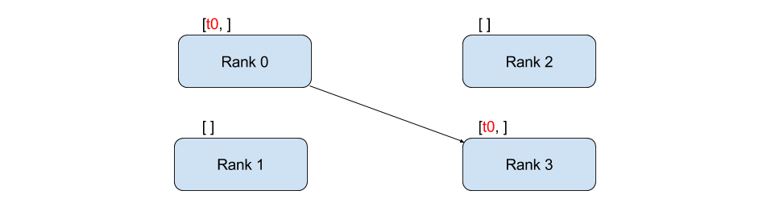
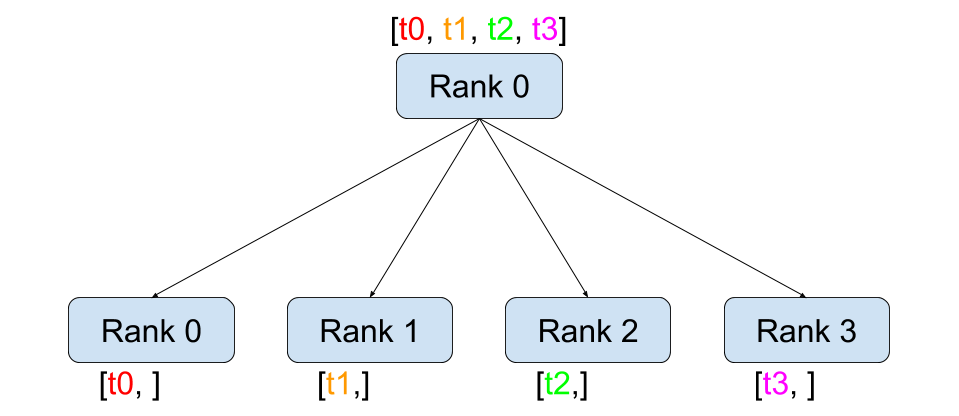
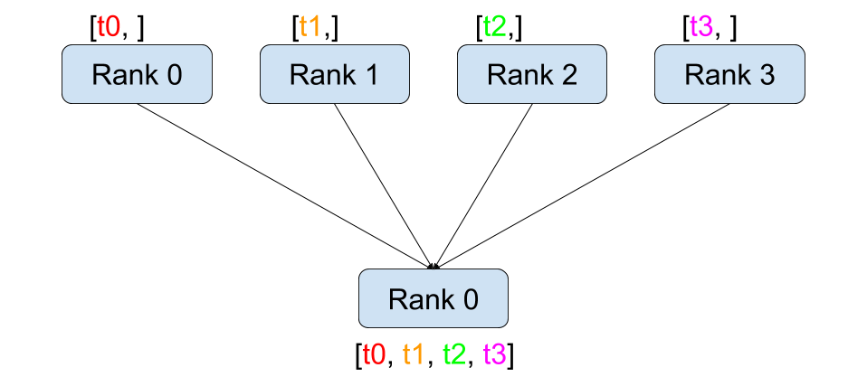
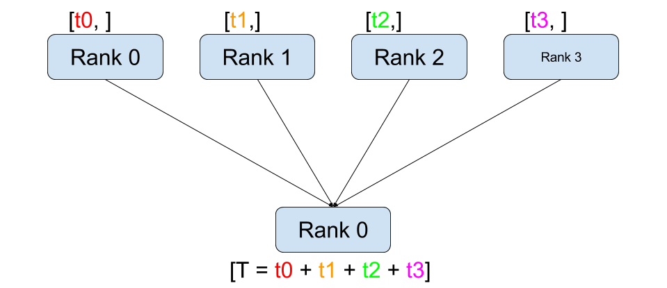
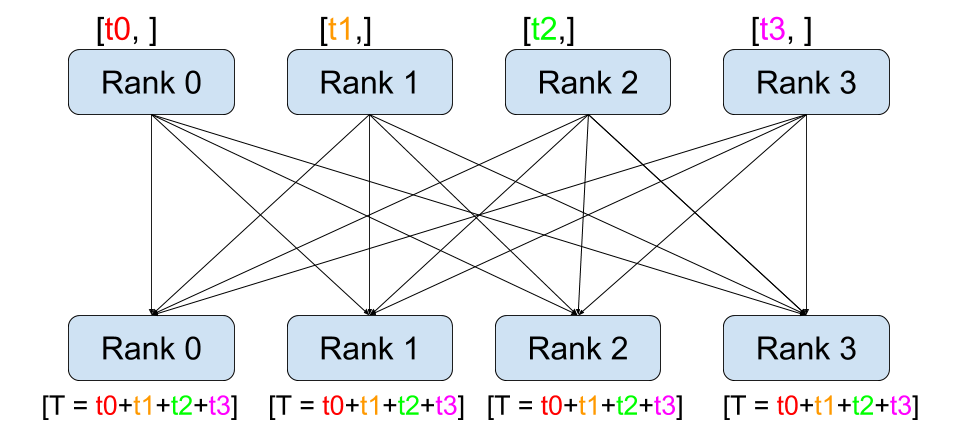
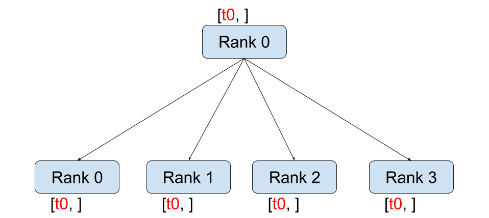
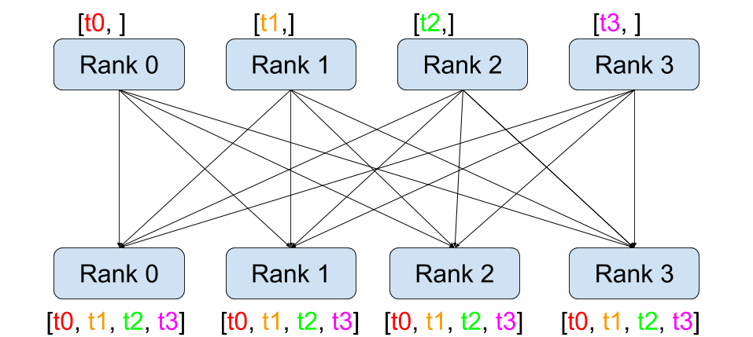

使用 PyTorch 编写分布式应用程序 ¶
创建时间：2025年4月1日 | 最后更新时间：2025年4月1日 | 最后验证时间：2024年11月5日
作者 : Seb Arnold
备注
 在 github 中查看和编辑此教程。
在 github 中查看和编辑此教程。
前提条件：
在本简短教程中，我们将介绍 PyTorch 的分布式包。我们将了解如何设置分布式环境，使用不同的通信策略，并探讨该包的一些内部机制。
设置 ¶
PyTorch 中包含的分布式包（即，
torch.distributed）使研究人员和从业者能够轻松地将他们的计算并行化到进程和机器集群中。为此，它利用消息传递语义，允许每个进程将数据通信到其他任何进程。与（torch.multiprocessing）多进程包相比，进程可以使用不同的通信后端，并且不受限于在相同机器上执行。
为了开始，我们需要能够同时运行多个进程
如果你有访问计算集群，你应该检查
与您的本地系统管理员联系或使用您喜欢的协调工具（例如，
pdsh，
clustershell，或者
slurm）。为了本教程的目的，我们将使用单台机器并使用以下模板启动多个进程。
"""run.py:"""
#!/usr/bin/env python
import os
import sys
import torch
import torch.distributed as dist
import torch.multiprocessing as mp
def run(rank, size):
""" Distributed function to be implemented later. """
pass
def init_process(rank, size, fn, backend='gloo'):
""" Initialize the distributed environment. """
os.environ['MASTER_ADDR'] = '127.0.0.1'
os.environ['MASTER_PORT'] = '29500'
dist.init_process_group(backend, rank=rank, world_size=size)
fn(rank, size)
if __name__ == "__main__":
world_size = 2
processes = []
if "google.colab" in sys.modules:
print("Running in Google Colab")
mp.get_context("spawn")
else:
mp.set_start_method("spawn")
for rank in range(world_size):
p = mp.Process(target=init_process, args=(rank, world_size, run))
p.start()
processes.append(p)
for p in processes:
p.join()
上述脚本启动了两个进程，每个进程将设置分布式环境，初始化进程组（dist.init_process_group），并最终执行给定的 run
函数。
让我们看看 init_process 函数。它确保每个进程都能通过一个主节点进行协调，使用相同的 IP 地址和端口。注意，我们使用了 gloo 后端，但
其他后端也是可用的。（参见图表）
第 5.1 节 ) 我们将在本教程的结尾介绍在 dist.init_process_group 中发生的魔法，但本质上它允许进程通过共享它们的位置相互通信。
点对点通信 ¶
{kind=link}

发送和接收 ¶
从一个进程向另一个进程传输数据称为点对点通信。这些是通过 send 实现的。
和 recv 函数或它们的 直接 对应版本，isend 以及
irecv。
"""Blocking point-to-point communication."""
def run(rank, size):
tensor = torch.zeros(1)
if rank == 0:
tensor += 1
# Send the tensor to process 1
dist.send(tensor=tensor, dst=1)
else:
# Receive tensor from process 0
dist.recv(tensor=tensor, src=0)
print('Rank ', rank, ' has data ', tensor[0])
在上述示例中，两个进程都从一个零张量开始，然后进程 0 增加张量并将其发送到进程 1，以便它们最终都得到 1.0。请注意，进程 1 需要分配内存以存储它将接收的数据。
还要注意，send/recv 是 阻塞的 ：两个进程都会阻塞
直至通信完成。另一方面，立即执行的操作
非阻塞 ；脚本继续执行，并且方法返回一个 Work 对象，我们可以选择
wait()。
"""Non-blocking point-to-point communication."""
def run(rank, size):
tensor = torch.zeros(1)
req = None
if rank == 0:
tensor += 1
# Send the tensor to process 1
req = dist.isend(tensor=tensor, dst=1)
print('Rank 0 started sending')
else:
# Receive tensor from process 0
req = dist.irecv(tensor=tensor, src=0)
print('Rank 1 started receiving')
req.wait()
print('Rank ', rank, ' has data ', tensor[0])
当使用立即执行的操作时，我们必须小心使用发送和接收的张量。由于我们不知道数据何时会被发送到其他进程，我们不应该修改发送的张量，也不应该在 req.wait() 完成之前访问接收的张量。换句话说，
在
tensor后写入，在dist.isend()后将导致未定义行为。在
tensor后读取，在dist.irecv()后将导致未定义行为，直到执行了req.wait()。
然而，在 req.wait() 执行后
执行后，我们保证通信已经发生，
并且存储在 tensor[0] 中的值是 1.0。
点对点通信在我们想要对进程的通信有更精细的控制时很有用。它们可以用来实现复杂的算法，例如在 百度的 或
DeepSpeech 或
Facebook 的大规模
实验们 。（参看）
第 4.1 节 ）
集体通信 ¶
 散射 ¶ |
 收集 ¶ |
 减少 ¶ |
 全量减少 ¶ |
 广播 ¶ |
 全收集 ¶ |
{kind=link}
{kind=link}
{kind=link}
{kind=link}
{kind=link}
{kind=link}
与点对点通信相反，集体通信允许在 组 中所有进程之间进行通信模式。组是所有进程的子集。要创建组，我们可以传递一个进程编号列表给 dist.new_group(group)。默认情况下，集体操作在所有进程上执行，也称为 世界 。例如，为了
获取所有进程上所有张量的总和，我们可以使用
dist.all_reduce(tensor, op, group) 集体操作。
""" All-Reduce example."""
def run(rank, size):
""" Simple collective communication. """
group = dist.new_group([0, 1])
tensor = torch.ones(1)
dist.all_reduce(tensor, op=dist.ReduceOp.SUM, group=group)
print('Rank ', rank, ' has data ', tensor[0])
因为我们想要计算组内所有张量的总和，所以我们使用
dist.ReduceOp.SUM 作为归约操作符。一般来说，任何交换律数学运算都可以用作操作符。PyTorch 自带许多这样的操作符，所有操作都在元素级别上执行：
dist.ReduceOp.SUM,dist.ReduceOp.PRODUCT,dist.ReduceOp.MAX,dist.ReduceOp.MIN,dist.ReduceOp.BAND,dist.ReduceOp.BOR,dist.ReduceOp.BXOR,dist.ReduceOp.PREMUL_SUM.
支持的运算符完整列表是
这里 .
除了 dist.all_reduce(tensor, op, group) 之外，PyTorch 中目前还实现了许多其他集体。以下是一些受支持的集体。
dist.broadcast(tensor, src, group)：从tensor复制src到所有其他进程。
dist.reduce(tensor, dst, op, group)：将op应用于每个tensor和存储结果在dst中。dist.all_reduce(tensor, op, group)与 reduce 相同，但结果存储在所有进程中。
dist.scatter(tensor, scatter_list, src, group)复制 \(i^{\text{th}}\) 张量scatter_list[i]到 \(i^{th}\) 过程。
dist.gather(tensor, gather_list, dst, group)：复制张量从所有进程中的dst。
dist.all_gather(tensor_list, tensor, group)：复制张量从所有进程到tensor_list，在所有进程中。dist.barrier(group)：阻塞 group 中的所有进程，直到每个进程都进入此函数。dist.all_to_all(output_tensor_list, input_tensor_list, group)：将输入张量列表分散到组中的所有进程，并返回输出列表中收集的张量列表。
支持的集体操作的全列表可以通过查看 PyTorch 分布式最新文档来找到。
(链接)。
分布式训练 ¶
注意： 您可以在本节的示例脚本中找到。
GitHub 仓库 。
现在我们已经了解了分布式模块的工作原理，让我们来编写
用它来做些有用的事情。我们的目标将是复制
的功能
分布式数据并行 。当然，这只是一个教学示例，在实际情况下，你应该使用上面链接的官方、经过充分测试和优化的版本。
简单来说，我们想要实现一个随机分布的版本
梯度下降。我们的脚本将允许所有进程计算它们批次数据的模型梯度，然后平均它们的梯度。
为了确保在更改进程数量时具有相似的收敛结果，我们首先必须划分我们的数据集。
为了确保在更改进程数量时具有相似的收敛结果，我们首先必须划分我们的数据集。
为了确保在更改进程数量时具有相似的收敛结果，我们首先必须划分我们的数据集。
（您也可以使用
torch.utils.data.random_split，而不是下面的代码片段。）
""" Dataset partitioning helper """
class Partition(object):
def __init__(self, data, index):
self.data = data
self.index = index
def __len__(self):
return len(self.index)
def __getitem__(self, index):
data_idx = self.index[index]
return self.data[data_idx]
class DataPartitioner(object):
def __init__(self, data, sizes=[0.7, 0.2, 0.1], seed=1234):
self.data = data
self.partitions = []
rng = Random() # from random import Random
rng.seed(seed)
data_len = len(data)
indexes = [x for x in range(0, data_len)]
rng.shuffle(indexes)
for frac in sizes:
part_len = int(frac * data_len)
self.partitions.append(indexes[0:part_len])
indexes = indexes[part_len:]
def use(self, partition):
return Partition(self.data, self.partitions[partition])
使用上面的代码片段，我们现在可以简单地使用以下几行代码对任何数据集进行分区：
""" Partitioning MNIST """
def partition_dataset():
dataset = datasets.MNIST('./data', train=True, download=True,
transform=transforms.Compose([
transforms.ToTensor(),
transforms.Normalize((0.1307,), (0.3081,))
]))
size = dist.get_world_size()
bsz = 128 // size
partition_sizes = [1.0 / size for _ in range(size)]
partition = DataPartitioner(dataset, partition_sizes)
partition = partition.use(dist.get_rank())
train_set = torch.utils.data.DataLoader(partition,
batch_size=bsz,
shuffle=True)
return train_set, bsz
假设我们有 2 个副本，那么每个进程将拥有一个 训练集
60000 / 2 = 30000个样本。我们还把批大小除以
副本数量以维持 128 的总体批量大小。
我们现在可以编写我们常用的前向-后向优化训练代码，并添加一个调用函数来平均我们模型的梯度。（以下内容主要受到官方 PyTorch MNIST 的启发）
示例 .)
""" Distributed Synchronous SGD Example """
def run(rank, size):
torch.manual_seed(1234)
train_set, bsz = partition_dataset()
model = Net()
optimizer = optim.SGD(model.parameters(),
lr=0.01, momentum=0.5)
num_batches = ceil(len(train_set.dataset) / float(bsz))
for epoch in range(10):
epoch_loss = 0.0
for data, target in train_set:
optimizer.zero_grad()
output = model(data)
loss = F.nll_loss(output, target)
epoch_loss += loss.item()
loss.backward()
average_gradients(model)
optimizer.step()
print('Rank ', dist.get_rank(), ', epoch ',
epoch, ': ', epoch_loss / num_batches)
需要实现 average_gradients(model) 函数，该函数简单地接收一个模型并平均其整个世界的梯度。
""" Gradient averaging. """
def average_gradients(model):
size = float(dist.get_world_size())
for param in model.parameters():
dist.all_reduce(param.grad.data, op=dist.ReduceOp.SUM)
param.grad.data /= size
哎呀！我们成功实现了分布式同步 SGD，可以在大型计算机集群上训练任何模型。
注意： 虽然上一句话在 技术上 是正确的，但要实现同步 SGD 的生产级实现，还需要更多技巧。
有很多 技巧需要实现同步 SGD 的生产级实现。再次强调，使用那些 经过测试和验证的 方法。
优化 .
我们自己的环全量减少 ¶
作为一项额外的挑战，想象一下，如果我们想实现 DeepSpeech 的高效环全量减少。这通过使用点对点集体操作来实现相当简单。
""" Implementation of a ring-reduce with addition. """
def allreduce(send, recv):
rank = dist.get_rank()
size = dist.get_world_size()
send_buff = send.clone()
recv_buff = send.clone()
accum = send.clone()
left = ((rank - 1) + size) % size
right = (rank + 1) % size
for i in range(size - 1):
if i % 2 == 0:
# Send send_buff
send_req = dist.isend(send_buff, right)
dist.recv(recv_buff, left)
accum[:] += recv_buff[:]
else:
# Send recv_buff
send_req = dist.isend(recv_buff, right)
dist.recv(send_buff, left)
accum[:] += send_buff[:]
send_req.wait()
recv[:] = accum[:]
在上述脚本中，allreduce(send, recv) 函数具有
与 PyTorch 中的那些略有不同的签名。它将接收到的
recv 张量，并将其中所有 send 张量的总和存储在其中。作为留给读者的练习，我们版本与 DeepSpeech 中的版本之间仍有一个区别：他们的实现将梯度张量分成块 ，以便最优地利用
通信带宽。（提示：
torch.chunk）
高级主题 ¶
现在我们准备探索一些更高级的功能，例如 torch.distributed。由于内容很多，本节分为两个小节：
通信后端：学习如何使用 MPI 和 Gloo 进行 GPU-GPU 通信。
初始化方法：了解如何在
dist.init_process_group()中设置最佳的初始协调阶段。
通信后端 ¶
torch.distributed 最优雅的方面之一是其能够
抽象并构建在多个后端之上。如前所述，
PyTorch 中实现了多个后端。
其中最受欢迎的包括 Gloo、NCCL 和 MPI。
它们各自有不同的规格和权衡，这取决于所需的用例。
可以在支持功能的比较表中找到。
可以找到。
这里 。
Gloo 后端
到目前为止，我们已经广泛使用了 Gloo 后端 。作为一个开发平台，它非常方便，因为它包含在预编译的 PyTorch 二进制文件中，并且可以在 Linux（自 0.2 版起）和 macOS（自 1.3 版起）上运行。它支持 CPU 上的所有点对点和集体操作，以及 GPU 上的所有集体操作。对于 CUDA 张量的集体操作实现没有像 NCCL 后端提供的那样优化。
你肯定已经注意到了，我们的分布式 SGD 示例在将模型放在 GPU 上时无法工作。为了使用多个 GPU，我们还需要进行以下修改：
使用
device = torch.device("cuda:{}".format(rank))模型 = Net()→模型 = Net().to(device)使用
data, target = data.to(device), target.to(device)
经过以上修改，我们的模型现在在两个 GPU 上训练，您可以使用 watch nvidia-smi 来监控它们的利用率。
MPI 后端
消息传递接口（MPI）是一种标准化的工具，
高性能计算领域。它允许进行点对点
集体通信，并为 API 的主要灵感来源
torch.distributed. 几种 MPI 实现存在（例如
Open-MPI,
MVAPICH2, Intel
MPI)，每种都针对不同的目的进行了优化。使用 MPI 后端的优点在于 MPI 在大计算机集群上的广泛可用性和高度优化。一些近期实现版本也能够利用 CUDA IPC 和 GPU Direct 技术，以避免通过 CPU 进行内存复制。
很遗憾，PyTorch 的二进制文件无法包含 MPI 实现，我们不得不手动重新编译它。幸运的是，考虑到编译时 PyTorch 会自行查找，这个过程相当简单。
为可用的 MPI 实现。以下步骤安装 MPI
后端，通过安装 PyTorch 从
源
创建并激活您的 Anaconda 环境，按照指南安装所有预置要求，但 不要 运行python setup.py install还未。
选择并安装您喜欢的 MPI 实现。请注意，启用 CUDA 感知 MPI 可能需要一些额外的步骤。在我们的案例中，我们将坚持使用不带 GPU 支持的 Open-MPI：conda install -c conda-forge openmpi
现在，前往您克隆的 PyTorch 仓库并执行python setup.py install。
为了测试我们新安装的后端，需要进行一些修改。
将以下内容替换为if __name__ == '__main__':init_process(0, 0, run, backend='mpi').运行
mpirun -n 4 python myscript.py。
进行这些更改的原因是 MPI 需要在启动进程之前创建自己的环境。MPI 还将启动自己的进程并执行在 初始化
方法 ，使排名和大小
init_process_group 的参数冗余。这实际上非常强大，因为您可以为 mpirun 传递额外的参数来为每个进程定制计算资源。（例如，每个进程的核心数、为特定排名手动分配机器，以及一些
更多 ）这样做，您应该会获得与其他通信后端相同的熟悉输出。
NCCL 后端
NCCL 后端提供了对 CUDA 张量集体操作的优化实现。如果您仅使用 CUDA 张量进行集体操作，请考虑使用此后端以获得最佳性能。NCCL 后端包含在支持 CUDA 的预构建二进制文件中。
初始化方法 ¶
为了结束本教程，让我们检查我们调用的初始函数：
dist.init_process_group(backend, init_method) . 具体来说，我们将讨论各种初始化方法，这些方法负责每个进程之间的初步协调步骤。这些方法使您能够定义这种协调是如何完成的。
初始化方法的选择取决于您的硬件配置，可能有一种方法比其他方法更合适。除了以下章节外，请参阅官方
文档获取更多信息。
环境变量
我们在这篇教程中一直使用环境变量初始化方法。通过在所有机器上设置以下四个环境变量，所有进程都将能够正确连接到主节点，获取其他进程的信息，并最终与它们进行握手。
MASTER_PORT：机器上为具有 0 级排名的进程预留的免费端口。MASTER_ADDR：将运行 0 级排名进程的机器的 IP 地址。WORLD_SIZE：进程总数，以便主进程知道需要等待多少个工作进程。RANK：每个进程的排名，以便它们知道自己是主进程还是工作进程。
共享文件系统
共享文件系统要求所有进程都能访问共享
文件系统，并通过共享文件进行协调。这意味着
每个进程将打开文件，写入其信息，并等待
直到每个人都这样做。之后，所有必要的信息都将
对所有进程均可用。为了避免竞态条件，
文件系统必须支持通过锁定
fcntl.
dist.init_process_group(
init_method='file:///mnt/nfs/sharedfile',
rank=args.rank,
world_size=4)
TCP
通过提供进程 0 的 IP 地址和可到达的端口号，可以通过 TCP 进行初始化。在这里，所有工作进程都将能够连接到进程 0，并交换如何相互连接的信息。
dist.init_process_group(
init_method='tcp://10.1.1.20:23456',
rank=args.rank,
world_size=4)
致谢
我要感谢 PyTorch 的开发者们在
他们的实现、文档和测试。当代码不清晰时，我总能依靠
的文档或测试
文档 或是
测试
找到一个答案。特别是，我想感谢 Soumith Chintala，
Adam Paszke 和 Natalia Gimelshein 提供的宝贵意见
并在早期草案中回答问题。